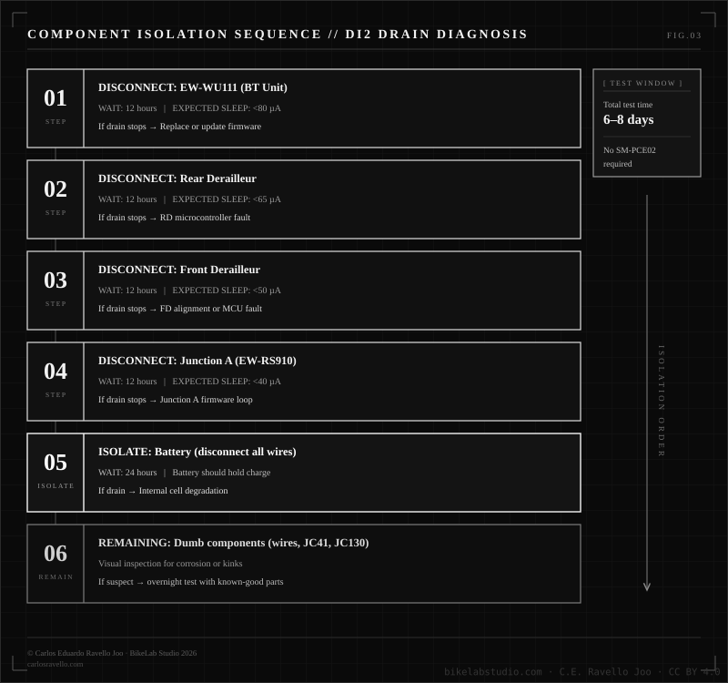
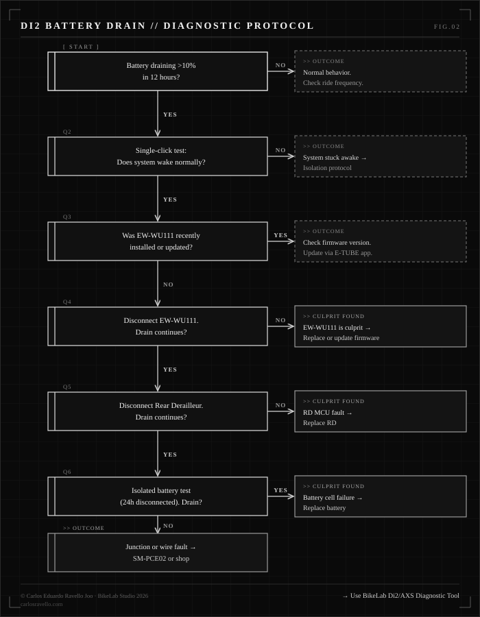

Shimano Di2 Battery Draining Overnight
Your battery was full last night. This morning: 40%. No ride. No crash. No firmware error on the app. The manual says it should last 2,000 km. It barely lasted 12 hours.
Since June 2025, I've been documenting cases like this in the workshop. Bikes from riders in Trujillo, the Andes, and abroad. Shimano Di2 across multiple generations — 9150, R9250, MT8100. Every case had the same pattern: a sudden unexplained drain, no obvious culprit, and a manual that says nothing useful.
This is the protocol I built from those cases. It doesn't require the SM-PCE02 diagnostic tool. It doesn't require taking the bike to a shop. It requires a multimeter, patience, and knowing which component to disconnect first.
Interactive diagnostic · free · runs in your browser
Rather be walked through it? The Di2 & AXS Diagnostic Tool runs the isolation fault-tree with you and tells you which component to unplug first.
▶ OPEN THE DI2 & AXS TOOLMODULE_01 // HOW DI2 POWER ACTUALLY WORKS
Before diagnosing anything, you need to understand the system you're working with. Di2 is a single-bus distributed power architecture — one 7.4V lithium battery feeds everything through E-Tube wiring. Each component has its own microcontroller and voltage regulator. They talk on the same bus.

© 2026 Carlos Eduardo Ravello Joo · BikeLab Studio · carlosravello.com
The key point: when the system sleeps, every microcontroller drops to a few microamps. When any single component fails to sleep, it keeps pulling milliamps around the clock. The difference between a healthy idle and a faulty one is three orders of magnitude.
| Component | Normal sleep (µA) | Active / shift (mA) | Faulty / stuck awake (mA) |
|---|---|---|---|
| Rear Derailleur (RD) | ~15 µA | 500–1,000 mA peak | 5–30 mA |
| Front Derailleur (FD) | ~12 µA | 800–1,200 mA peak | 3–15 mA |
| Junction A (EW-RS910) | ~8 µA | 2 mA | 1–5 mA |
| BT Unit (EW-WU111) | ~80 µA | 8 mA | 1–5 mA continuous ⚠ |
| Junction B / Y-splitter | No firmware — passive component. Cannot get stuck awake. | ||
MODULE_02 // THE NUMBERS — NORMAL VS. ABNORMAL
A healthy Di2 system idles at 20–80 µA total. That's not a typo. Microamps. On a 500 mAh battery, that's theoretically months of standby.
If your battery is dropping more than 2% per day with no rides, something is wrong. If it's dropping 20–30% overnight, something is very wrong.
Example: your battery is 500 mAh. A faulty rear derailleur stuck awake pulls 20 mA continuously.
That's why your battery dies the next morning. 25 hours from full charge to dead — with zero shifting. The math is that simple. The fix is knowing which component is pulling those 20 mA.
MODULE_03 // THE 6 SUSPECTS — RANKED BY FREQUENCY
Based on what I've seen in 12 months of cases, here's the actual ranking — not Shimano's theoretical one.
| # | Culprit | Typical drain | How to confirm |
|---|---|---|---|
| 01 | EW-WU111 / EW-WU101 BT unit — firmware stuck in advertising mode | 1–5 mA continuous | Disconnect it. Problem disappears overnight. |
| 02 | Rear derailleur MCU not entering sleep | 5–30 mA | Disconnect RD. Drain stops. |
| 03 | Shifter lever physically engaged overnight | Full active current | Check if bike is leaning on lever. Flip it upside down. |
| 04 | Moisture / corrosion in junction box or wiring | 1–10 mA intermittent | Visual inspection. Drain is irregular — sometimes worse after rain. |
| 05 | Battery internal cell degradation | Self-discharge >3%/day | Isolate battery alone for 24h. Still drops? Replace it. |
| 06 | Front derailleur alignment loop — micro-adjustment cycle | 50–200 mA spikes | Battery drops irregularly. FD limit screws out of spec. |
MODULE_04 // THE 5-MINUTE TEST — START HERE
Before touching a single wire, do this. It takes 5 minutes and tells you if the system is even sleeping correctly.
STEP_01 Charge the battery to 100%.
STEP_02 Leave the bike completely still for 10 minutes. Don't touch anything.
STEP_03 Press the shifter lever once — a single, light press.
WHAT THE SINGLE CLICK TELLS YOU:
If nothing happens on the first click → the system was sleeping correctly. Second click shifts. This is normal behavior on wireless Di2.
If the first click immediately shifts → the system never slept. Something kept it awake. This is your drain.
If nothing happens on any click → battery may already be dead, or there's a communication fault. Different problem entirely.
MODULE_05 // THE ISOLATION PROTOCOL
If the system isn't sleeping, the next step is finding which component is keeping it awake. This takes days, not hours. There's no shortcut. The SM-PCE02 shortens the process — but if you don't have one, this works.

© 2026 Carlos Eduardo Ravello Joo · BikeLab Studio · carlosravello.com
01 Disconnect the EW-WU111/EW-WU101 wireless unit first. Charge to 100%. Wait 12 hours. Check charge level. Expected idle drain with unit removed: <65 µA total system. If drain disappears — you found it. Go to Module 06.
02 If drain continues — disconnect the rear derailleur. Charge again. Wait 12 hours. Expected idle: <50 µA. If drain stops — the RD microcontroller is the fault. Replace it. If drain continues, reconnect RD and move on.
03 Disconnect the front derailleur. Same 12-hour cycle. Expected idle: <40 µA. FD faults are less common but real — usually from misalignment causing a micro-adjustment loop that never settles.
04 Disconnect Junction A (EW-RS910). Rare firmware loop cases have been documented. If drain stops here, the junction needs firmware update or replacement.
05 Isolate the battery itself. Disconnect all wires. Leave just the battery alone for 24 hours. Check level. A healthy battery self-discharges less than 0.5%/day at room temperature. If it drops 3%+ on its own — replace the battery, not the components.
06 Dumb components: wires, SM-JC41, EW-JC130 Y-splitter. These have no firmware — they can't get "stuck awake." But corrosion creates partial conductive paths. Inspect visually for oxidation, especially near junctions in the seatpost channel. Test by substituting with known-good parts overnight.
Total test time: 6–8 days. No SM-PCE02. No shop visit. Just systematic elimination.
MODULE_06 // WHAT SHIMANO WON'T TELL YOU
The EW-WU111 wireless unit is the most common culprit. Not because it's a bad product — it's because there was a firmware bug that kept it in Bluetooth advertising mode instead of entering sleep. Battery drain of 1–5 mA continuously, every hour, every day.
FIRMWARE ALERT:
This was fixed in subsequent firmware releases via E-TUBE PROJECT updates. But Shimano never documented it in any user manual. The fix appeared only in app update release notes — which most riders never read.
If you have an EW-WU111 and haven't updated firmware via E-TUBE PROJECT Cyclist (Windows), do it now. It's the first thing to eliminate.
| Component | Known firmware issue | Fix | Where documented |
|---|---|---|---|
| EW-WU111 | BT advertising mode stuck — continuous drain 1–5 mA | Update via E-TUBE PROJECT | App release notes only. Not in manual. |
| EW-WU101 | ANT+ wake cycle not terminating properly in some builds | Update via E-TUBE PROJECT | App release notes only. Not in manual. |
| RD-R9250 (12s semi-wireless) | Wireless receiver partial wake state — drain 2–8 mA | Firmware update + verify 12V port seated | Shimano support cases. Not in documentation. |
| Battery middle port (12s Di2) | Missing dummy plug causes constant bus query loop | Insert dummy plug in middle port | This one IS in the manual. Most riders miss it. |
The 12-speed battery (BT-DN300) has three ports. All three must be occupied — with components or dummy plugs. Leave one empty and the system continuously queries it. Every few seconds. All night.
MODULE_07 // DIAGNOSTIC PROTOCOL — FULL DECISION TREE

© 2026 Carlos Eduardo Ravello Joo · BikeLab Studio · carlosravello.com
MODULE_08 // WHEN TO STOP AND GO TO A SHOP
You've done the isolation. You found the faulty component — it's the RD. You replaced it. Drain continues. Now what?
Three scenarios require SM-PCE02 or a qualified shop:
- Multiple components showing abnormal draw simultaneously — possible E-Tube bus fault, not individual component failure.
- Drain is intermittent — dies completely every 3–4 days but not every night. Intermittent junction leaks are nearly impossible to catch without continuous current monitoring.
- After replacing RD, FD, and BT unit, drain persists. At this point the Junction A or the E-Tube wiring itself is suspect. SM-PCE02 single-unit connection mode is the right tool.
Don't spend $400 on a new battery if you haven't completed the isolation first. The battery is almost never the cause of overnight drain — it's usually the EW-WU111 or the RD. Start there.
Di2 is a distributed embedded system running on 7.4V. When it works, it's invisible. When it fails, the failure mode is almost always the same: one component stuck awake, pulling milliamps around the clock, while the rest of the system sleeps normally.
The isolation protocol takes a week. But it's systematic, free, and it works. You don't need the SM-PCE02 for 90% of cases.
The 10% that do need it — you'll know. Because you'll have eliminated everything else first.
→ For step-by-step interactive diagnosis of Di2 and SRAM AXS shifting faults:
BikeLab Di2 & AXS Diagnostic Tool — free, no app, no account